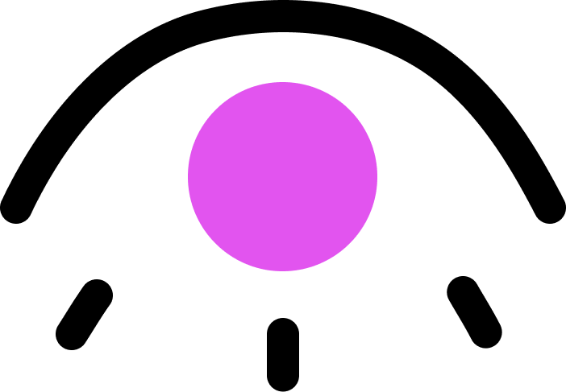
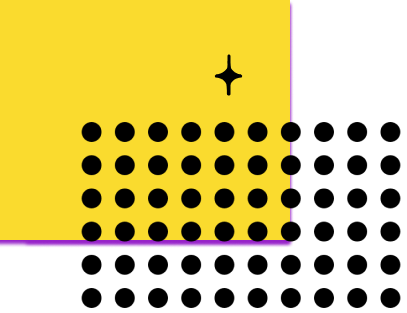

Colorblynd
Color blindness is when people perceive color in a different way, which often makes distinguishing colors difficult.Colorblynd is an app designed to show developers just how frustrating poorly designed apps can be for users with color blindess and other visual impairments.
Colorblynd consists of a series of interactive features and games to highlight the importance of inclusive color choice for a more inclusive world. Ready? Click start :)
